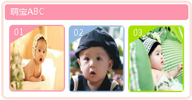

热点聚焦
- 冬季小儿发热预防处理
- 影响胎儿性别的13大诱因丨5类孕妈妈喝牛奶应该谨慎
- 【分娩前后】 37%准妈妈们错误认识无痛分娩
- 【早期教育】 Hero Baby天赋力
- 【孕期攻略】 孕期皮肤瘙痒治疗宝典
- 【早期教育】 为爱存储——让宝宝的生命有...
- 【孕期需知】 孕妈妈必备出游宝典

- ·孕前进补如何达到优生？孕前进补如何达到优生？
- ·怀孕前男女双方都查什么？孕前进补如何达到优生？
- ·不孕和不育的区别。孕前进补如何达到优生？
- ·孕前必补的营养 4种微量元素。孕前进补如何达？
- ·遇见灿世，遇见生命的平衡。孕前进补如何达到？
- ·遇见灿世，遇见生命的平衡。孕前进补如何达到？
- ·10招帮准妈妈挑对孕期内衣裤孕期内衣裤孕期内衣
- ·音乐胎教：不同时期应选不期应选不期应选不同音
- ·好的新生儿玩具应具备哪四具应具备哪四大特点
- ·准妈妈分享：优质胎教的三大原则优质胎
- ·雾霾天气持续 如何挑放霾口罩？何挑放霾
- ·遇见灿世，遇见生命的平衡。孕前进补如何达到？
- 冬季谨防小儿水痘
- 冬季需谨慎小儿肺炎
- 如何预防宝宝肺炎？
- 当心！缺锌的孩子易生病
- 宝宝的出生体检
- 查看疾病防治所有内容
- 冬季谨防小儿水痘
- 冬季需谨慎小儿肺炎
- 如何预防宝宝肺炎？
- 当心！缺锌的孩子易生病
- 宝宝的出生体检
- 查看疾病防治所有内容

- 冬季谨防小儿水痘
- 冬季需谨慎小儿肺炎
- 如何预防宝宝肺炎？
- 当心！缺锌的孩子易生病
- 宝宝的出生体检
- 查看疾病防治所有内容